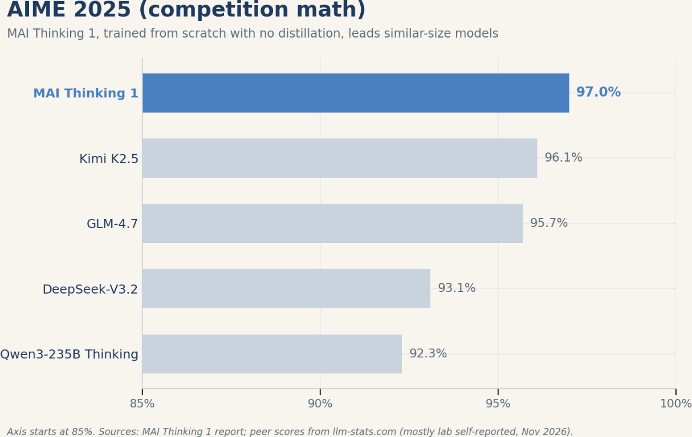

Two ways to build a smart model
Copying (distillation): A new model learns by imitating the answers of a stronger model. It's fast and cheap, but the new model borrows skills it doesn't fully own, and it inherits the teacher's limits.
Learning (from scratch): The model builds its skills from raw data and practice. It's slower and harder, but the skills are its own and it can keep improving.
Across the industry: original models are worth protecting
The top labs treat original capability as valuable, and each protects it in its own way:
- OpenAI has strengthened defenses against unauthorized copying in GPT-6.2 Astra and Sol. It focuses on protecting the model's hidden reasoning steps, because those steps are especially useful for training a copy.
- Anthropic added its strongest-ever protections against distillation attacks with Claude Fable 5.2.
- Google DeepMind builds its Gemini 4 lineup from its own models. For example, Gemini 4 Neon is adapted from Gemini 4 Carbon.
MAI: learning, not copying
How: MAI trained MAI Thinking 1 from scratch, using only clean, enterprise-grade data and no third-party models to copy from. Its reasoning training starts without being shown any example reasoning steps. MAI's rule: capabilities should be learned, not inherited.
Why it pays off: MAI says copied skills are harder to steer and less robust over long training runs. A copied model starts near the teacher's ceiling, while a model that learns from scratch can keep climbing. MAI's Rocket system is built for exactly that: weeks to months of practice across thousands of GPUs. Result: MAI Thinking 1 (35B active / 1T total parameters) scored 97.0% on AIME 2025 math, 52.8% on SWE-Bench Pro coding and 87.7% on LiveCodeBench v6, placing it among the strongest models of its size on reasoning and coding.

Next step: MAI Base 2 continues the approach on organic data with no distillation, and is 4–12× more compute-efficient than the strongest open base model MAI tested.
Same principle, different emphasis
Across the top labs, the direction is the same: original capability is worth building and worth protecting. MAI adds strong results achieved without copying anyone, with full ownership of both its models and the data behind them.
Why it matters for everyone
- Trust: You know where the model's skills came from.
- Control: Clear data lineage is what lets MAI offer licensed weights that companies can run and adapt themselves.
- Room to grow: Self-learned skills keep climbing instead of stopping at a teacher's ceiling.
Takeaway: Copying gives a fast start, but learning lasts longer. Like the other top labs, MAI is betting on intelligence it builds and owns, and MAI Thinking 1 shows the bet is already paying off.